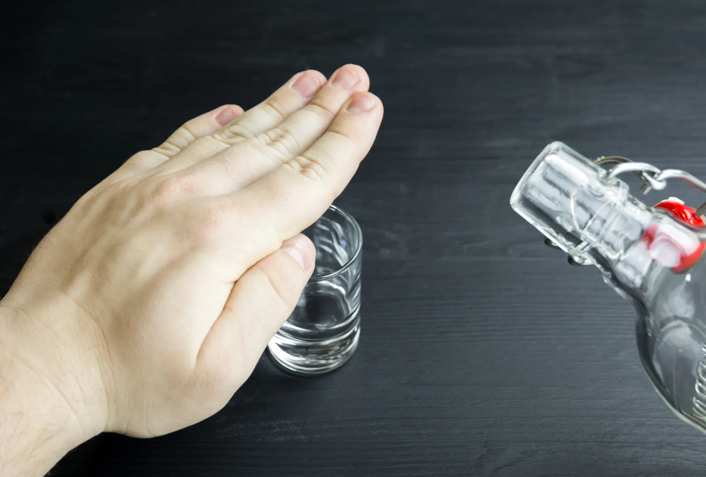

What is alcohol addiction & its treatment by psychiatrist
Alcohol Addiction or alcoholism is a medical condition found in certain individuals who are involved in heavy or frequent alcohol consumption in spite of knowing its harmful consequences such as physical or emotional distress or a combination of both. The severity of this disorder varies from person to person depending upon the frequency and quantity of alcohol consumption. Some individuals prefer drinking heavily while others go for binge drinking.
In India, alcohol addiction is widespread both in urban and rural areas across all states. As per National Family Health Survey-4 conducted from 2015 to 2016 approximately, 23% to 74% males in general and 24% to 48 % females consume alcohol in India. Alcohol consumption in India attributes to an annual average loss of 1.45% of the GDP of the Indian economy.
A feeling of strong craving for alcohol consumption, repeated failure to limit the amount of consumption, depression, avoiding social functions and hobbies due to alcohol use are some of the common symptoms of alcoholism. Alcohol addiction treatment in India is believed to be a lifetime commitment with rehabilitation programs, drug therapy, and nutritional changes are known to be the best treatments offered by best alcohol rehabilitation centres in India.

Symptoms of Alcoholism
Popular symptoms of alcoholism are listed below:
- Greater alcohol consumption, either in frequency or quantity.
- Repeated unsuccessful attempts to cut down on alcohol consumption.
- Drinking alcohol at inappropriate times viz. early morning or inappropriate places viz. temple/ hospital.
- A strong urge or craving for alcohol consumption.
- Change in friend circle and indulging in making friendship with people who have similar drinking habit.
- Constantly missing deadlines for fulfilling obligations at either work, school or home due to frequent alcohol use.
- Avoiding social gathering, or contact with loved ones.
- Developing a tolerance for alcohol or missing of ‘hangover’ symptoms.
- Extreme dependency on alcohol consumption to execute daily activities.
- Depression, lethargy, and similar emotional distress.
- Experiencing sweating, nausea, and shaking when not consuming alcohol.
Causes of Alcoholism
Scientists have not yet been able to identify the exact cause of alcohol addiction but genetics, social and environmental factors, attempts to ease emotional pain contribute to alcoholism. Dr. Gorav Gupta is best psychiatrist for alcoholism near Gurgaon, Delhi NCR.
Below is given a list either of causes that contribute alone or in combination for alcohol addiction:
- Family History
- Stressful environment
- Some untoward incident during childhood
- Mental health issue such as depression.
- Taking alcohol together with medicines
- Attempts to ease emotional pain.
Treatments for alcoholism by senior psychiatrist
As mentioned in the introductory section of this article, alcohol addiction treatment in India consists of rehabilitation program, drug therapy, or nutritional changes or a combination of any of these depending on the criticality of the patient condition. Some of the popular treatments of alcoholism are given below:
Detoxification: The best alcohol rehabilitation centre in India begin their treatment with detoxification, withdrawal from alcohol consumption using medication. This procedure is applied for 2-7 days at some inpatient treatment centre. Psychiatrists offering alcohol addiction treatment in India prescribe sedating medications for preventing withdrawal symptoms.
Behavioural therapy: Counselling, also called talk therapy offered by mental health care providers or best psychiatrist in Delhi whereby an alcoholic is taught various ways to change his/ her behaviour. The most commonly used techniques for alcohol addiction treatment in India are motivational, contingency, cognitive-behavioural therapy, and 12-step facilitation.
Medications: Acamprosate and Naltrexone are the approved medicines by the U.S. Food & Drug Administration for alcohol addiction treatment. Vivitrol, a medicine belonging to the naltrexone family when injected rather than taking in pill form has proved to be effective to reduce alcoholism. On the other hand, acamprosate also help combat alcohol cravings once an individual stops consuming alcohol. Studies have shown that topiramate and gabapentin are also effective medicines for reducing alcohol cravings. Disulfiram, an older medication may also help prevent the urge of consuming alcohol.
Psychological counselling: Alcohol addiction treatment in India also comprises of therapy and counselling for groups and individuals which goes hand in hand to better visualise an individual’s problem with alcohol and help recover from the psychological aspects of alcohol use. Couple or family therapies offered by best alcohol rehabilitation centre in India have proved to be effective for the recovery process.
Support groups: This therapeutic approach of alcohol addiction treatment in India involves meeting with other people having similar disorder. Other forms of this treatment include Rational Recovery (non-spiritual), Celebrate! Recovery (Christian focus), and of course alcoholic anonymous which is absolutely free of cost. Additional elements of this therapy include participating in a support group or receiving medical or psychiatric attention.
Spiritual practice: Regular spiritual practice helps maintaining recovery from alcoholism. This simple treatment formula offered by best alcohol rehabilitation centre in India has helped many individuals gain greater insight into their spiritual side.
Why is Dr.Gorav Gupta the Best Psychiatrist for treating alcohol addiction?
As mentioned in the introductory section of this article, alcohol addiction treatment in India is a lifelong process and can be treated with the right medication, therapy and aftercare programs.
Dr Gorav Gupta is believed to be the best psychiatrist for alcohol abuse in Gurgaon, Delhi NCR with years of clinical experience in treating various mental disorder including alcoholism. His approach for holistic treatment includes a combination of medicine with psychotherapy.
Best alcohol rehabilitation centres in Delhi appointing Dr Gorav Gupta for treatment of alcohol addiction offers the following treatments:
- Medications
- Behavioural therapies
- Residential treatment programs
As a piece of advice, Dr Gupta advice patients follow a healthy lifestyle which includes a healthy diet, getting quality sleep, practise yoga/ meditation, and spending quality time with your loved ones for a healthy and productive life.
Frequently asked questions
How common is alcoholism?
As per National Family Health Survey-4 conducted from 2015-2016 approximately, 23% to 74% males in general and 24% to 48% females consume alcohol in India.
What is the cost of alcoholism?
The disease burden is actually too high. Alcohol consumption in india attributes to an annual average loss of 1.45% of GDP of Indian Economy. The cost of alcoholism is to be suffered by not only the individual but whole family. Poverty, domestic violence, chronic diseases and premature death are some common consequences of alcoholism.
What are the common health complications of alcoholism?
The most common physical health complications of alcoholism can be the fatty liver disease, alcoholic liver disease, cirrhosis of liver, kidney failure and cardio-vascular diseases.
Can alcohol addiction be controlled?
Yes, alcohol addiction can be controlled with the help of proper medication and psychotherapy. There are de-addiction centers available who provide you with treatment package for alcohol de-addiction. You will be assisted by psychotherapists in overcoming with most uncomfortable withdrawal symptoms which accompany in de-addiction.
What it takes to quit alcohol?
First of all, it takes a firm resolve to quit alcohol. After that comes coping with withdrawal symptoms which is a short-time fix. Once the withdrawal symptoms subside, its time to address the core problem that led you to indulge in alcohol.
What are withdrawal symptoms?
Withdrawal symptoms appear just after you stop taking alcohol. If you are in contact with your doctor, he may prescribe you some medicine to better deal with the withdrawal symptoms and ease your suffering. Withdrawal symptoms can range from shaky hands, headache, nausea, vomiting, sweating, hallucinations, insomnia and seizures.
More conditions we treat
All services →Dr. Gupta’s practice is part of Tulasi Healthcare, with centres in Gurugram and Mehrauli.
Book a consultation
Ask for a call back
Leave your number and the team calls you back. For a consultation in New Delhi or Gurugram, or online, for yourself or for someone in your family.
- Consultation₹2,700 for 20 minutes
- OPDNew Delhi Wed and Fri, 2 to 6 pm; Online Thu, 2 to 5 pm
- New Delhi2/6 Sarvapriya Vihar, New Delhi 110016
- GurugramSector 64, Gurugram, Haryana 122102
- Call+91 88000 00255
Thank you, the team has your request.
Someone from Dr. Gupta’s team will call you back during OPD hours to find a time that suits you. The call comes from a Delhi number.
If it is urgent, call +91 88000 00255 now.